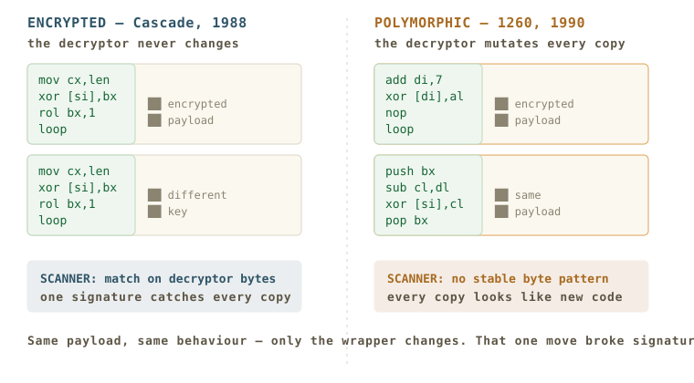
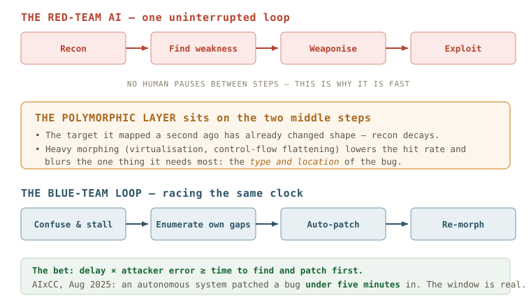
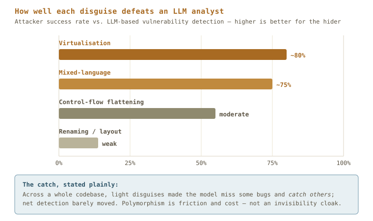

Savvy Security LLC · Security Architecture
The Polymorphic Shield
A trick invented in 1990 to hide a virus may be one of the better defenses we have against an attacker that never sleeps, never pauses, and writes its own exploits — if we are honest about what it can and cannot do.
The claim I am going to defend, and then attack
Here is the thesis in one breath. An attacker driven by a language model runs the whole intrusion — reconnaissance, exploit, pivot — as one loop with no human pausing between the steps. The only way to beat a loop that fast is to make its map wrong while it reads it, and to close the gap it finds before it can use it. Polymorphism keeps the map wrong. Sandboxing keeps the probing expensive. Autonomous patching closes the gap. Win the race on the clock, not on the firewall.
I believe that. I also run a company, Savvy Security LLC, whose core research — the Polymorphic Node Base — is built on exactly this idea, so you should read everything that follows knowing I have a thumb on the scale. The useful thing I can do is press on my own argument harder than a skeptic would, in public, with sources. Part VI is where I try to break it. If it survives that, it is worth building on. If it does not, better I find out here than in an incident report.
Part I — An Idea Born On the Wrong Side
Polymorphism did not arrive as a defense. It arrived as a way to hide malware, and for about fifteen years that is the only thing it was good for. To argue that it should change sides, I have to start by being clear about what it actually is, because the word gets thrown around loosely.
The first step was not polymorphism at all. It was encryption. By the late 1980s, antivirus worked by keeping a list of signatures — short, fixed byte strings lifted from known viruses — and scanning files for them. The countermove was obvious: encrypt the virus body so the signature is not sitting there in the clear. The 1988 Cascade virus did this. Its payload was scrambled; a small decryptor at the front unscrambled it at runtime.
It did not work for long, and the reason it failed is the hinge of this whole essay. You can encrypt the body, but something has to decrypt it, and that something has to be present, in the clear, in every single copy. The decryptor is a signature. Scanners simply started matching on the decryption loop instead of the body, and encrypted viruses went down about as fast as plaintext ones.
Encryption hides the payload but leaves a fixed decryptor — a stable thing to match. Polymorphism is the harder trick: the decryptor itself is rewritten, differently, in every copy, so there is no fixed thing left to match. Same behaviour, different body, every time.
Everything in this article turns on that one sentence. A defender who understands why it broke signature scanning in 1990 already understands why it is interesting again in 2026 — and, just as importantly, where it stops working.

Part II — 1260, and the Man Who Built It To Prove a Point
The first true polymorphic virus was written in 1990 by Mark Washburn, and it is usually catalogued by its length: 1260, also known as V2PX or Chameleon. Washburn built it on top of published, disassembled source for the earlier Vienna virus — Ralf Burger had printed Vienna's code in a book, which is its own lesson about what happens when you publish a working weapon — and then he did the thing nobody had done before. He made the decryptor randomize itself.
The mechanics are almost quaint by modern standards, and worth seeing, because the entire later history is just this idea with more horsepower. In each new copy, 1260 would choose a different encryption key, and — the real innovation — it would generate a different decryption routine to match: different registers, instructions in a different order, and do-nothing instructions sprinkled through to pad the sequence and shift every byte offset. A nop here, a push/pop pair there, an add immediately undone by a sub. Semantically inert. Structurally, a new program.
The point is that there was no longer a loop to match. The scanner authors of 1990 had built their entire industry on the assumption that two copies of the same virus share bytes. 1260 was the first thing in the wild that broke the assumption on purpose.
And here is the part the user in me wants to underline, because it is the reason this is a story about exceeding your peers and not just about one more virus. 1260 did not win by being more destructive. Its payload was unremarkable — it was a nonresident .COM infector, the plainest kind. It won by changing the category of problem it posed. Every other virus of its generation was an instance of a pattern. 1260 was a generator of patterns. A defender could catch Vienna with one signature and catch ten thousand copies. To catch 1260 you needed an algorithm, not a signature — you needed to reason about what the code did, not what it looked like. Washburn forced the entire industry up a level of abstraction. That is what exceeding your peers looks like: not a bigger version of the same thing, but a move that makes the old way of competing obsolete.
Washburn, for what it is worth, framed it as research — a demonstration that signature scanning was a dead end. He was right. He was also, by releasing working code, part of the reason the next decade got worse. I hold both of those at once.
Part III — The Engine, and the First Arms Race
A proof of concept is one thing. A toolkit is another, and the toolkit is what turned a clever trick into an era. In 1991, the viruses Tequila and Maltese Amoeba became the first polymorphics to cause widespread outbreaks. Then, in 1992, the Bulgarian virus writer known as Dark Avenger — the author of Maltese Amoeba — released the Mutation Engine, or MtE.
MtE was not a virus. It was a module, shipped with documentation, an object file to link against, and the source of a simple demo virus, so that any author of any mediocre virus could bolt professional-grade polymorphism onto it. Dark Avenger had, in effect, written a library and distributed it with a README. Mutation engines began circulating like do-it-yourself kits, and the better ones could generate, in the words of the contemporary literature, billions upon billions of decryptor variations.
Some mutation engines generate billions upon billions of variations.
Symantec, Understanding and Managing Polymorphic Viruses
This is the moment I want defenders to study, because the industry's response to MtE is the blueprint for everything I am going to propose. The antivirus companies could not write a signature per variant — there were effectively infinite variants. They could not write a signature for the decryptor — that was the whole point of the attack. So they changed the game in two ways that should sound very familiar.
First, algorithmic detection: instead of matching bytes, write code that reasons about whether a given byte sequence behaves like a decryptor. Second, and more importantly for us, generic decryption through emulation — run the suspect file inside an isolated virtual machine, a sandbox, and simply let it decrypt itself. However many disguises the decryptor wears, when it runs it must reveal the real payload, and the payload does not change. The sandbox waits for the mask to come off.
Read those two moves again with 2026 eyes. The defense against the first great wave of polymorphism was not a better list. It was (1) reason about behaviour instead of appearance, and (2) detonate the thing in a controlled box and watch what it actually does. Thirty years later those are still the two load-bearing ideas in malware defense. The attacker brought shape-shifting; the defender answered with behavioural reasoning and sandboxing. Hold that pairing. We are about to run it in reverse.
Part IV — The Turn: Who Is Shape-Shifting Now
For thirty years, polymorphism was offense and sandboxing was defense. The interesting claim of this essay is that the roles can swap, and that the arrival of language models on both sides of the keyboard is what makes the swap worth taking seriously.
Start with the attacker, because that is the threat I am actually trying to answer. In March 2023, researchers at HYAS Labs published a proof of concept they called BlackMamba: a keylogger that, rather than carrying its malicious code, reaches out to a large language model at runtime and has fresh code synthesized for it on each execution. They described it as resynthesizing its capability every time it runs, modifying benign code at runtime, needing no command-and-control channel, and — in their own testing against an unnamed, industry-leading endpoint product — frequently producing no alerts.
I want to be careful here, because this is exactly the kind of claim that gets inflated. BlackMamba is a proof of concept, not an in-the-wild campaign. The caveats are almost all the researchers' own; the endpoint product was not named, so the evasion result cannot be independently checked. Treat it as a demonstration of a direction, not a body count. But the direction is the point: 1260 mutated within the fixed grammar of hand-written assembly. An LLM-driven attacker mutates by regenerating from intent. That is a different and larger space. Washburn's engine had billions of variations; a model has as many as there are ways to express a goal in code, which is to say, for practical purposes, all of them.
Then came the attacker that was not a proof of concept. In November 2025, Anthropic disclosed GTG-1002 — catalogued by MITRE as campaign C0062 — a cyber-espionage operation in which, by Anthropic's account, an AI agent carried out the large majority of the intrusion work across reconnaissance, exploitation and exfiltration, with humans stepping in only at a handful of decision points. That claim drew well-earned skepticism from parts of the industry, and I covered both the claim and the doubt in a companion piece, The Ghost in the Shellcode. For this essay the exact autonomy percentage does not matter. What matters is the shape: an intrusion that runs as one continuous machine-speed loop, where the slow human step — reading an alert, deciding, acting — has been removed from the attacker and not yet from the defender.
Meanwhile the defensive version of polymorphism grew up and got a product category. Under the name Automated Moving Target Defense (AMTD) — which Gartner flagged as an emerging category in early 2023 — vendors such as Morphisec and Sophos ship runtime defenses that randomize and relocate memory, APIs and application structures so that an exploit written against the layout it observed a moment ago lands on a target that has already moved, often hitting a decoy that reports the intrusion. This is the old attacker trick, pointed the other way: the defender is now the shape-shifter, and the attacker is the one staring at a map that keeps changing. I will note, because it matters, that most of the glowing numbers for these products are vendor-reported and should be read as such. The concept is sound and well-attested; the specific ROI figures are marketing until a third party checks them.
Part V — The Clock Is the Only Battlefield That Matters
Put the two halves together and you get the real argument, which is not about hiding. It is about time.
Against a machine-speed attacker, every defense that depends on a human being reading something and deciding is already too slow. The alert fires, the analyst is in a meeting, and by the time anyone looks, the loop has run to completion. So the defender's only viable play is to compete on the same clock: automate the response, and — this is where polymorphism earns its place — buy time for that automation to finish by making the attacker's work harder and its conclusions less certain.

And the second half of the bet — that the defender can actually patch inside that window — stopped being speculative in August 2025, at DARPA's AI Cyber Challenge (AIxCC) finals at DEF CON 33. Autonomous systems, with no human intervention permitted during a run, found and fixed real vulnerabilities in real open-source code. Trail of Bits' second-place system, Buttercup, reported scoring a patch in under five minutes on at least one task, and across the final round found 28 vulnerabilities and successfully applied 19 patches, against a slate drawn from the most common real-world bug classes. DARPA required the finalists to open-source their systems, which means that a competitively validated autonomous find-and-patch stack is sitting on GitHub right now, for the cost of reading the repository.
That is the number that makes the thesis more than a metaphor. If a bug can be patched autonomously in minutes, then the job of polymorphism and sandboxing is suddenly tractable: it does not have to stop the attacker forever. It only has to confuse and delay the attacker for longer than it takes the defender's own loop to notice the gap and close it. The defense is not a wall. It is a stall, bought so that a faster repair can land first.
Part VI — Where I Try To Break My Own Argument
Now the honest part, and the reason I would trust this essay over the version of it a vendor would write. The thesis has a serious problem, and if I do not raise it, someone in my comments should.
Polymorphism beat signature scanners because signature scanners were literal-minded. They matched bytes. Change the bytes, win. But an LLM-driven attacker is not matching bytes. It reasons about what code means. If I rename every variable and reorder every instruction in a vulnerable function, a 1990 scanner is defeated and a competent reasoning model simply shrugs and reads the logic. The entire mechanism that made 1260 work — defeat the literal matcher — may not transfer to an adversary that is not a literal matcher. This is the objection that keeps me honest, and the data backs it up more than it backs me.
In 2025, a systematic study put code obfuscation up against LLM-based vulnerability detection across several datasets. The headline finding is uncomfortable for anyone selling morphing as a shield: across a whole codebase, light transformations caused the model to miss some vulnerabilities it would have caught — and to catch some it would have missed — so that the net detection rate barely moved. The study's own conclusion is that obfuscation exposes the models' reliance on superficial structural cues rather than robust semantic understanding, but the practical upshot stands: you do not get invisibility by renaming things. If your mental model is “morph the code and the AI goes blind,” that model is wrong, and the evidence says so plainly.

So is the whole idea dead? No — but it survives in a smaller, sharper, more defensible form, and the same study is where I find the lifeline. Three things in that research keep the thesis alive:
- Heavy transformation does degrade the model. The near-cancellation holds for light disguises. Semantics-bending transformations — code virtualization, mixed-language constructs, aggressive control-flow flattening — pushed attacker success rates up toward 75–80% in the C/C++ tests, because they strip away the structural cues the model leans on. There is a real degradation; it just costs real engineering, not a rename pass.
- The model loses precision exactly where the attacker needs it. This is the finding I would stake the thesis on. After obfuscation, models could often still tell that a vulnerability existed — but they struggled to correctly identify its type and location. Think about what an automated attacker actually needs. “Something is wrong somewhere in here” does not write an exploit. To weaponize, you need the class of bug and the precise spot. Polymorphism degrades that last mile selectively — it can leave the attacker confident that a hole exists and unable to aim. That is not invisibility. It is worse aim under time pressure, which is exactly the thing a stall is supposed to produce.
- Smaller and cheaper attackers degrade more. Models under about 8 billion parameters were markedly more vulnerable to obfuscation, and scaling past that gave only marginal robustness. An attacker running a cheap local model to stay quiet and avoid API logging — which is a realistic operational choice — eats the full penalty. You do not have to beat the frontier model. You have to beat the one your actual adversary can afford to run at scale.
There are other honest holes, and I will name them rather than let them ambush the idea later:
- Morphing has a cost you pay every day and the attacker pays only on attack days. Runtime randomization burns cycles, complicates debugging, and can break things in ways that page you at 3am, not the adversary. The classic academic critique of moving-target defense — from Evans and colleagues — is blunt: the benefits are often much smaller than you would expect, and in many scenarios diversity raises the attacker's cost by a constant factor rather than fundamentally stopping them. A constant factor is still worth having when you are racing a clock, but it is not a force field, and pretending otherwise is how you end up with expensive infrastructure that bought you less than a good patch cadence would have.
- The payload still has to run, and that is still the sandbox's opening. The reason sandboxing beat 1260 is eternal: however you disguise it, the real behaviour eventually executes. That cuts both ways. It is why I pair polymorphism with sandboxing on defense — but it is also the reminder that a sufficiently patient attacker can detonate my morphing in its sandbox, learn the invariants, and strip the disguise. Morphing raises the cost of that learning; it does not remove the possibility.
- My repair loop can be poisoned. If the enumerate-and-patch half depends on an LLM reading logs, tickets or code, then prompt injection — currently the number-one entry on the OWASP Top 10 for LLM applications, and unsolved in the general case — means my own defensive agent is reading attacker-influenced instructions. A defense that patches at machine speed can also be misdirected at machine speed. The verification layer is not optional overhead; it is the product.
The strong form of the thesis — “morph the code and the AI goes blind” — is false, and the data kills it. The defensible form survives and is still worth building: polymorphism does not blind a reasoning attacker, but it reliably raises its error rate and its cost, and it degrades precisely the precision — bug type and location — that an attacker needs to turn “something is wrong” into a working exploit. It is a stall, not a shield. Its entire value is measured in the time it buys, and that time is only worth something if an automated enumerate-and-patch loop is standing behind it to spend the time on. AIxCC proved that loop can run in minutes. So the architecture is sound. The marketing version of it is not.
Part VII — What To Actually Build
I have stated my bias; here is the part I am confident in regardless of whose framework you use. If you accept that the battlefield is the clock, these follow.
- Buy time at the two steps in the middle, not at the edges. An attacker's loop is recon → find weakness → weaponize → exploit. Polymorphism is wasted on the first and last; it earns its cost on the middle two, where the attacker is building a model of your system and trying to pin an exploit to a location. Morph what it must observe and target, and leave the cheap stuff alone.
- Go heavy or go home. The data is unambiguous: renaming and reordering are theater against a reasoning adversary. If you are going to pay the cost of morphing, pay it on the transformations that actually degrade the model — structural, semantics-bending change — or do not bother and spend the budget on patch speed instead.
- Pair every morph with a sandbox. This is the 1992 lesson, undefeated. Disguise delays detection; detonation in a controlled box defeats disguise. The defender who owns the sandbox owns the ground truth, because the payload always, eventually, has to be itself.
- The stall is only worth what you spend it on. Build the patch loop first. Polymorphism with no autonomous enumerate-and-patch behind it is just expensive latency you inflicted on yourself. Start from the open-sourced AIxCC systems — they are a mature, competitively validated find-and-patch stack, free — and treat morphing as the thing that buys that loop the minutes it needs.
- Enforce where the packet and the syscall are, not where the analyst is. If closing the gap depends on a human reading an alert, you have already lost the race. The response has to live in the hot path — kernel level, eBPF/XDP, no round trip to a console someone has to be watching.
- Assume your own agent is reading the attacker's words. Any defensive model that ingests logs, tickets or code is a prompt-injection target. Scope its permissions as if it is already compromised, and never let a model be the sole attestation of its own patch. The verification layer is the product.
The through-line
In 1990, Mark Washburn proved that you could make a thing change its shape faster than the defender could catalog the shapes, and he used it to hide a virus. The defenders answered not by cataloging faster but by changing the question — reason about behaviour, and detonate in a box. For thirty years that is where the line sat: shape-shifting for offense, behavioural reasoning and sandboxing for defense.
The machine-speed attacker erases the one advantage that made that arrangement comfortable — the human pause in its own loop. So the defender has to pick the shape-shifting back up, not to become invisible, which the data says is not on offer, but to do the only thing that beats a loop with no pauses: make its map wrong, keep it wrong, and close the gap it finds before it can spend it. Confuse, stall, enumerate, patch, re-morph. Win on the clock.
Washburn forced his adversaries up a level of abstraction. Thirty-five years later, the attacker is forcing us up one. The honest answer is not a shield. It is a stall long enough to let a faster repair land — and the repair, for the first time, is now fast enough to be worth stalling for.
Sources
Origins of polymorphic code
- “Polymorphic code.” Wikipedia. On the encryption-vs-polymorphism distinction, the mutating decryptor, and sandbox/emulation countermeasures. en.wikipedia.org/wiki/Polymorphic_code.
- “1260 (computer virus).” Wikipedia. Mark Washburn, 1990; V2PX / Chameleon; derived from Ralf Burger's disassembly of the Vienna virus; signature varied by randomizing the decryption routine. en.wikipedia.org/wiki/1260_(computer_virus).
- Symantec (Broadcom). Understanding and Managing Polymorphic Viruses. White paper — encrypted vs. polymorphic viruses, the move to generic decryption via emulation in an isolated virtual machine, and the “billions upon billions of variations” figure. docs.broadcom.com.
The Mutation Engine and the first wave
- Bitdefender. “From Michelangelo to the Self-Mutating Engine.” Tequila and Maltese Amoeba as the first widespread polymorphic outbreaks (1991); Dark Avenger's distribution of MtE (1992) with documentation, an OBJ file and demo-virus source; the resulting wave of polymorphic generators. bitdefender.com.
- Kaspersky. Encyclopedia entries for 1990 and 1992. encyclopedia.kaspersky.com.
LLM-era polymorphism and AI-driven attacks
- HYAS Labs. BlackMamba proof-of-concept — an AI-synthesized polymorphic keylogger that resynthesizes its code at runtime, needs no C2, and evaded an unnamed industry-leading EDR in the authors' own testing, March 2023. Reported by Elizabeth Montalbano, “AI-Powered ‘BlackMamba’ Keylogging Attack Evades Modern EDR Security,” Dark Reading. darkreading.com. (All evasion caveats are the researchers' own; the EDR product was not named.)
- Anthropic. “Disrupting the first reported AI-orchestrated cyber espionage campaign” (GTG-1002), 14 November 2025 — catalogued as MITRE ATT&CK Campaign C0062. Industry skepticism summarized in Bill Toulas, “Anthropic claims of Claude AI-automated cyberattacks met with doubt,” BleepingComputer, Nov 2025.
Moving target defense — the case and the critique
- Morphisec / Gartner. On Automated Moving Target Defense (AMTD): runtime memory and resource randomization with decoys; Gartner's “Emerging Tech: Security — The Future of Cyber Is Automated Moving Target Defense,” 28 February 2023. morphisec.com. (ROI and endpoint figures are vendor-reported.)
- Sophos. “Pioneering Automated Moving Target Defense (AMTD).” sophos.com.
- Evans, David, Anh Nguyen-Tuong, and John Knight. “Effectiveness of Moving Target Defenses.” The benefits of the moving-target approach are “often much less significant than one would expect”; identifies where MTD is and is not effective. cs.virginia.edu/evans/pubs/mt2011.
Obfuscation vs. LLMs, and autonomous patching
- “A Systematic Study of Code Obfuscation Against LLM-based Vulnerability Detection.” arXiv:2512.16538 (2025). Net detection largely unchanged under light obfuscation (downgrades and upgrades roughly cancel); virtualization (~80%) and mixed-language (~75%) most damaging; models retain existence but lose type/location after obfuscation; sub-8B models markedly more vulnerable; reliance on “superficial structural cues rather than robust semantic understanding.”
- Trail of Bits. “Buttercup wins 2nd place in AIxCC Challenge,” 9 August 2025 — scored a patch under five minutes into a task; 28 vulnerabilities found and 19 patched in the final round; >90% patch-accuracy claim, with teams penalized for inaccurate patches. blog.trailofbits.com.
- DARPA. AI Cyber Challenge (AIxCC) final results, DEF CON 33, August 2025. Finalist systems required to be open-sourced. Winners: Team Atlanta (ATLANTIS), Trail of Bits (Buttercup), Theori.
- OWASP. Top 10 for Large Language Model Applications, 2025 — LLM01: Prompt Injection.
A note on this edition and its bias. I build autonomous defensive architecture for a living — the Polymorphic Node Base at Savvy Security LLC is the morph-stall-enumerate-patch loop described in Part VII — so I began this piece already believing its conclusion. I have tried to earn the belief rather than assume it. Every historical claim here is checked against primary and reference sources listed above; the 1260, MtE and sandboxing history is well-attested, and I have flagged where a figure is vendor-reported or a proof-of-concept rather than a documented incident.
The most important change the research forced on me is in Part VI. I started from the strong claim — that morphing blinds an AI attacker — and the 2025 obfuscation study does not support it; net detection barely moves under light transformation. I have left that finding in at full strength and rebuilt the argument on the narrower ground it does support: that polymorphism degrades the attacker's precision and cost, and is only worth its own overhead when an autonomous patch loop is there to spend the time it buys. If that distinction reads as hedging, good — the hedge is the honest part.
Malcolm R. Smith writes on security architecture, threat modeling, and autonomous defense for Savvy Security LLC.